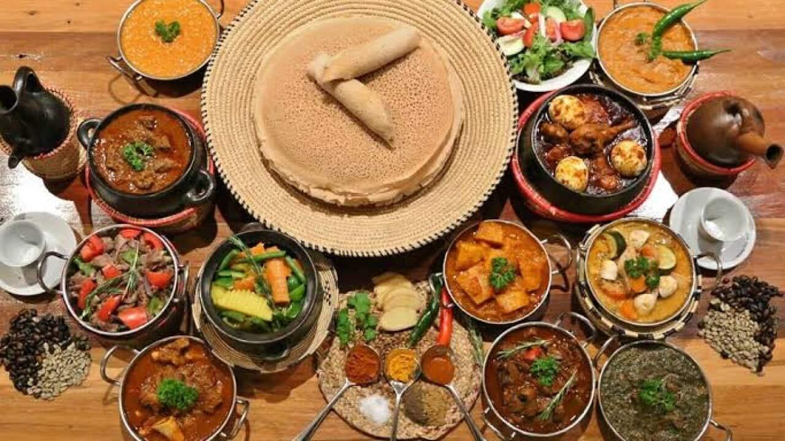

East Africa & Indian Ocean Islands: Highland Spices & Coastal Botanicals
From the mist-shrouded highlands of Ethiopia and Eritrea to the spice-scented forests of Madagascar, this region unites ancient indigenous grains, intricate chili masalas, and fragrant island herbs.
From the Horn of Africa to the Vanilla Coast
This expansive culinary region brings together two extraordinary ecological zones: the high-altitude plateaus of Ethiopia and Eritrea and the biodiverse island landscapes of Madagascar. In the Horn of Africa, volcanic soil fosters teff, the world's smallest grain, fermented for days into spongy sourdough injera that serves as an edible communal platter for slow-braised wats and stews.
To the east across the Indian Ocean, Madagascar presents a unique gastronomic synthesis of Austronesian seafaring heritage and African cattle farming. Meals revolve around pristine steamed rice (vary) paired with fragrant broths infused with ginger, tomatoes, and indigenous anamalao (brède mafane) greens, creating a tingling, refreshing culinary sensation unlike anywhere else on Earth.

Staple Ingredients & Cooking Techniques
Teff & Fermented Injera
An ancient gluten-free grain fermented naturally with wild airborne yeasts into porous, sour flatbreads that cradle communal stews.
Berbere Spice Blend
A sacred complex blend combining sun-dried chilies, korarima (false cardamom), sacred basil (besobila), fenugreek, and rue.
Niter Kibbeh / Tesmi
Clarified butter gently cooked with koseret, wild garlic, ginger, and turmeric until aromatic, forming the rich foundation of regional braises.
Anamalao & Island Botanicals
Madagascar’s signature peppery brèdes that deliver a subtle tingling buzz on the palate, harmonizing with fresh ginger and vanilla.
Explore the Region's Signature Recipes

Ethiopian Doro Wat
Spicy chicken drumsticks braised for hours with caramelized onions, niter kibbeh, and berbere, garnished with simmered eggs.

Eritrean Zigni
Cubed beef simmered gently with puréed plum tomatoes, berbere, garlic, and spiced clarified butter until intensely tender.

Malagasy Romazava
Madagascar’s national dish marrying tender braised beef with leafy anamalao greens and ginger-tomato broth.
The Heritage of Berbere & Doro Wat
Watch this detailed masterclass by W2 KITCHEN explaining the art of blending authentic Ethiopian berbere spices, rendering spiced butter, and slow-cooking highland wats.